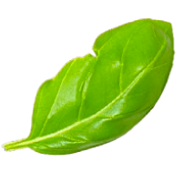
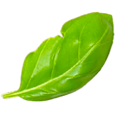

Citations
Citations
(Images from websites and Websites used: )
Beaudoin, Bri. "Creamy Vegan Ramen." Evergreen Kitchen, 11 Mar. 2018, evergreenkitchen.ca/creamy-vegan-ramen/. Accessed 6 Feb. 2025.
"Chefs for Healthy Soil." NRDC, www.nrdc.org/chefs-healthy-soil. Accessed 6 Feb. 2025.
"3 Environmental Benefits of Shopping at Your Local Farmers Market." Evergreen, 17 Apr. 2023, www.evergreen.ca/stories/3-environmental-benefits-of-shopping-at-your-local-farmers-market/. Accessed 6 Feb. 2025.
Eating Keto Is Simpleü•ëü•ò‚ņ." Instagram - Ketorecipesbest, 22 Sept. 2024, www.instagram.com/p/DAPoB-zyNzT/. Accessed 6 Feb. 2025.
Mclntyre, Joy. "Charcuterie or Vegetable Platter..." Facebook, 12 Dec. 2024, www.facebook.com/groups/115373935152452/posts/8943855165637574/. Accessed 6 Feb. 2025.
Morrison, Geoffrey. "The Best Ramen In The World? Japan's Ichiran Ramen." Forbes, 16 May 2016, www.forbes.com/sites/geoffreymorrison/2016/05/30/the-best-ramen-in-the-world-japans-ichiran-ramen/#6b7ab01228cd. Accessed 6 Feb. 2025.
Pagot, Thomas. "Homemade Ramen Noodles." Full of Plants Tasty Vegan Recipes, 8 Mar. 2023, fullofplants.com/homemade-ramen-noodles/. Accessed 6 Feb. 2025.
Shoemaker, Caitlin. "Creamy Vegan Mushroom Ramen." From My Bowl, 4 Oct. 2022, frommybowl.com/creamy-vegan-mushroom-ramen/. Accessed 6 Feb. 2025.
Shytsman, Alexandra. "Vegan Miso Ramen Recipe." Tasting Table, 11 Apr. 2022, www.tastingtable.com/815855/vegan-miso-ramen-recipe/. Accessed 6 Feb. 2025.
"Weekday Vegetarian Miso Ramen." Umi Organic, 20 Nov. 2016, www.umiorganic.com/recipe-blog/2016/11/20/weekday-vegetarian-miso-ramen. Accessed 6 Feb. 2025.
(Image JPG citations/links)
cdn77-s3.lazycatkitchen.com/wp-content/uploads/2025/02/quick-ramen-bowl-800x1200.jpg
encrypted-tbn0.gstatic.com/images?q=tbn:ANd9GcQ6oC3wPALiNNCXxF45nOa_jbBOMyrzvaRQpsq-NvNyxh-IGpGfxeI4B9bF2H4IC1JtvEE&usqp=CAU
encrypted-tbn0.gstatic.com/images?q=tbn:ANd9GcQgX-jjS_saoSeOxzgUGB9ZtQurxp1_Ww8r_A&s
encrypted-tbn0.gstatic.com/images?q=tbn:ANd9GcQplPTdE024rOYflSvuuy4bXj7rTDFVrvfZJXX1MyfE0olDa4NLNyRXNAIMk8GySwXewrc&usqp=CAU
encrypted-tbn0.gstatic.com/images?q=tbn:ANd9GcRh7tMuepFV9tLLtDDhWVeJhQpJP0TJV2h_zaI597C95jZslKYgLiJbAVv1YvW98liSOrQ&usqp=CAU
encrypted-tbn0.gstatic.com/images?q=tbn:ANd9GcRV42BeLqlJZixwFsHV0yEku6-fRR0eseFlZQRU6CaI02lQI01bmTvG4PNY28fMomcFH44&usqp=CAU
encrypted-tbn0.gstatic.com/images?q=tbn:ANd9GcSDb2mrso9DsTL1hqyZGvUlbx3dcD1gIaK5QA&s
https://dynamic-media-cdn.tripadvisor.com/media/photo-o/2b/93/4c/d0/a-small-old-water-village.jpg?w=1200&h=-1&s=1
https://dynamic-media-cdn.tripadvisor.com/media/photo-o/21/68/6a/a4/entrance-kajiimiya-gate.jpg?w=500&h=-1&s=1
i.pinimg.com/736x/28/b6/df/28b6dfa7ffce0476b4b64efbd0f2f7eb.jpg
images.immediate.co.uk/production/volatile/sites/30/2024/12/Spicy-peanut-butter-and-corn-ramen-f8e2b15.jpg?quality=90&resize=556,505
saltandbaker.com/wp-content/uploads/2021/04/Ramen-with-Vegetables-1.jpg
sixhungryfeet.com/wp-content/uploads/2021/08/Miso-Tahini-Ramen-1.jpg
static.vecteezy.com/system/resources/thumbnails/056/726/374/small_2x/spicy-ramen-bowl-with-vegetables-and-sesame-seeds-for-asian-cuisine-food-art-photo.jpg
static01.nyt.com/images/2023/07/14/multimedia/14EVERYDAY-VEGETABLESrex3-hbck/14EVERYDAY-VEGETABLESrex3-hbck-superJumbo.jpg
woonheng.com/wp-content/uploads/2021/02/Vegan-Miso-Ramen-scaled.jpg
*Copy Right Checklist (Google Doc Link): https://docs.google.com/document/d/1Jxq_n6aC3B-yYHK8ujdhKb8lUAYPtIEFYaOdoHFe9Ao/edit?usp=sharing
*Copy Right Checklist (PDF Link): file:///Users/reshchan/Downloads/CopyRight%20Checklist%20.pdf
*Student Worklog (Google Doc Link): https://docs.google.com/document/d/1Eq18qFGS7x5EzXpkWfyjNbIz_ZJF-Gsva5T4OepJrho/edit?usp=sharing
*Student Worklog (PDF Link): file:///Users/reshchan/Downloads/Copy%20of%20CopyRight%20Checklist%20.pdf
.png)
 

.png)
.png)